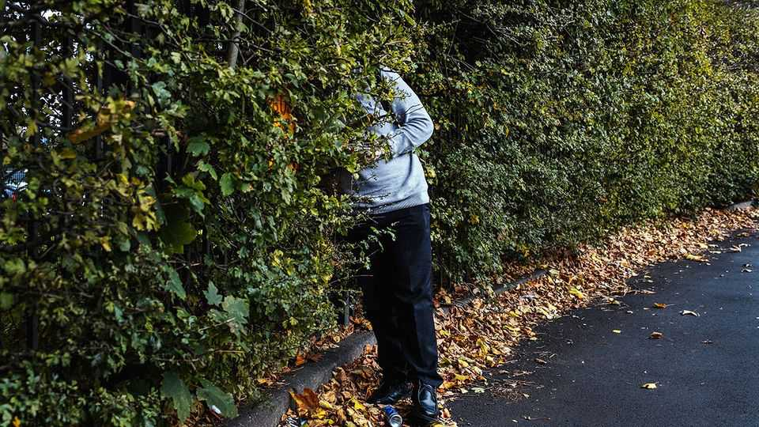

Britain’s epidemic of school shirking is shocking, but fixable
High time to take a history lesson

Sep 17th 2026
The holidays are a memory, and school is in full swing. But an alarming number of pupils are staying away. Before covid-19 one in ten children were “persistently absent” from English schools, meaning they missed 10% or more of their lessons. Now nearly one in five are.
Missing school is costly. The Department for Education calculates that persistently absent students earn £10,000 ($13,500) less per year by age 28 than their peers with near-perfect attendance records. Children who are persistently absent are more likely to end up in prison, take drugs and harm themselves. Britain has more than 1m NEETs—young adults not in education, employment or training—who cost the state over £120bn in benefits and lost output. Their ranks are full of those who were school absentees.
Although international comparisons are tricky, the data suggest that in much of the OECD, a club of mostly rich countries, the rate of absenteeism remained flat after the covid-19 pandemic. But it rose in English-speaking countries. Britain has a particular problem with severe absence. The proportion of pupils missing more than 50% of classes reached a record high in the 2025-26 school year.
The causes of persistent absenteeism often lie outside the school gates, says Paul Whiteman of the National Association of Head Teachers. The pandemic closed schools, undermining the long-repeated message that attendance is compulsory. More parents work from home, so no longer need teachers to baby-sit. Home schooling, which is not closely vetted, is increasingly common.
Poverty plays a part: poor children are much more likely to be severely absent. Over 1m young Britons are estimated to have no bed to themselves. They may go to class tired, fall behind and drop out. Poorer children also tend to have more mental-health trouble. Indeed, illness is the most common reason given for missing school. Last year the number of young Britons referred to mental-health services passed 1m for the first time, according to the Children’s Commissioner.
Children who have special educational needs account for most long-term absences. Hugh, a 14-year-old from Lincolnshire, has ADHD and autism. He has not been to school in a year. Bullies and strict teachers made his life so miserable that he had a mental-health crisis. His mother is still struggling to find him an online tutor for the new academic year. She welcomes the government’s plans to open more specialist schools and to give teachers better resources for neurodiverse children. But she argues that school remains too hard for kids who do not fit the mould.
Tackling the attendance problem will require more than rounding up truants in shopping centres and fining their parents. Past experience provides some lessons. Between 2000 and 2013 the rate of overall absence in English schools fell by two-fifths. Moira Wallace, a former senior civil servant, credits investment in on-site mentors and nurses and extra funding for poorer schools. Absence rates stopped falling after cuts were made to education and youth-services budgets, then shot up after the covid lockdowns. Early intervention helps. “It costs thruppence to help kids when they’re small,” says Mark Mon-Williams of the University of Leeds. Countries with lower rates of absence tend to have joined-up health, education and welfare systems; in Britain families often navigate disconnected services.
Putting on more clubs and activities on Fridays, when absence rates are higher, might push more pupils through the gates. Online tutors and older pupils could help bring long-term absentees up to speed. Andy Burnham, the prime minister, hopes that a new curriculum with more vocational options, due in 2028, will bring back bored teenagers who doubt the value of education. But apprenticeships are hard to come by in a stagnant economy, and good ones still require sharp arithmetic and literacy. Mr Burnham and his team have some homework to do.■